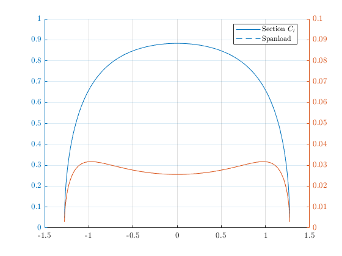

Contents
clear close all clc set(groot,'defaultAxesTickLabelInterpreter','latex'); set(groot,'defaulttextinterpreter','latex'); set(groot,'defaultLegendInterpreter','latex'); load naca2412_1e5.mat Clfun = @(alpha) heaviside(deg2rad(25) - abs(alpha)).*interp1(deg2rad(naca24121e5.alpha), naca24121e5.CL, alpha, 'pchip')... + heaviside(abs(alpha) - deg2rad(25)).*(2.1.*sin(alpha)+0.29).*cos(alpha);
problem parameters
alpha = deg2rad(10); vinf = [cos(alpha), 0, sin(alpha)]'; xyz = [0; 0; 0]; N = 101; AR = 6.5; S = 1; lambda = 1; Lambda = deg2rad(0); Gamma = deg2rad(0); tic b = sqrt(AR*S); c = S/b;
build geometry
[xyzV, xyzC, xyzD, cCs, cVs, ns] = wingGeom(xyz, N, AR, S, lambda, Lambda, Gamma);
build and solve linear system
CLdes = 1; %Vtransp = sin(alpha) - (sin(alpha)*cos(alpha)); Vtransp = sin(alpha) - CLdes/(2*pi*cos(Lambda)); RHS = weisslRHS(alpha, ns, 0*Vtransp*ones(N,1)); A = weisslA(xyzC, xyzV, ns); Atrefftz = weisslAtrefftz(xyzD, xyzV, ns); G = A\RHS; % local Cl Cl = 2*G./cCs; % local Loading Ccl = 2*G/c; % perpendicular Cl Clp = Cl/(cos(Lambda)^2);
downwash
local induced angle (includes bound vortex)
alphai = alpha - Cl/(2*pi); %alphai1 = -atan(-Adi*G-2*sin(alpha))+Vtransp*2*cos(alpha)^2; % trefftz downwash w = -0.5*Atrefftz*G; Cdi = w.*Cl; Ccdi = w.*Ccl; %Vtransp1 = (sin(alpha) - Cl/(2*pi));
results
CL = trapz(xyzC(2,:)/b, Ccl) CDi = trapz(xyzC(2,:)/b, Ccdi) e = (CL^2)/(pi*AR*CDi) toc
CL =
0.7495
CDi =
0.0277
e =
0.9928
Elapsed time is 0.232074 seconds.
figures
figure hold on grid on yyaxis left plot(xyzC(2,:), Cl) plot(xyzC(2,:), Ccl) ylim([0, 1.0]) yyaxis right plot(xyzC(2,:), Cdi) plot(xyzC(2,:), Ccdi) ylim([0, 1.0]/10) legend('Section $C_l$', 'Spanload', 'location', 'best') figure hold on plot(xyzC(2,:), -atan(2*w)) ylim([-0.2, 0.1])